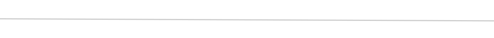

Работы
На русском
In English
На русском
На русском
In English
Видео становится привлекательнее
Превью повышает Ctr
По превью люди видят, насколько интересным будет ролик. Если превью
будет некачественная то с вероятностью 80% ваш ролик пропустят
Если на каждом видео будет превью одинакового стиля, то вскоре ваш канал начнут узнавать
Превью можно исползовать на других веб. сайтах или соц сетях кроме ютуба
В превью передаются ключевые моменты с видео